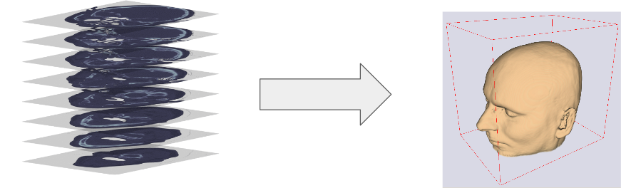
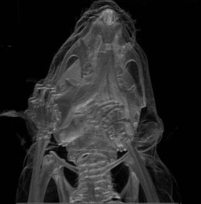
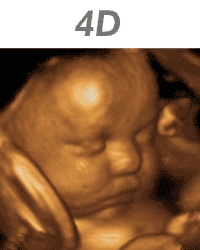
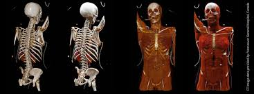
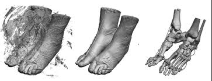

class: center, middle # Medical Visualization & Volume Rendering ### Instructed by: Eslam Adel #### eslam.a.mahmoud@eng1.cu.edu.eg --- ## Introduction and motivation -- * Medical Imaging is a field of science that deals with the study of the imaging of the human body. * It's used for the diagnosis of disease as an alternative to surgical procedures. * Imaging equipment are capital equipment in every hospital --  --- ## Introduction and motivation Cont, -- * Advancements of technology had improved the quality of these scanners -- * Generate a large number of images for different slices with a very high resolution. -- * Challenging to handle such amount of data --  --- ## Traditional 2D Visualization * Just visualize the image in 2D -- * Doctor has to look at high number of images to diagnose the patient -- * It's not possible to diagnose the patient with a single image -- * Doctor also needs to check the different projections (sagittal, coronal, axial) --  --- ## 3D Medical Visualization -- * These images are stacked together to make a 3D volume of data. -- * The volume is rendered using a volume rendering technique. -- <center>  </center> --- ## Volume rendering applications -- ### Diagnosis -- * Make diagnosis process more easy and affective -- <center>  </center> --- ## Volume rendering applications Cont, -- ### Image guided therapy -- * In cancer treatment -- * Patient is scanned prior to chemical or radiological treatment -- * 3D Visualization for accurate localization of tumour -- * Better drug delivery and minimize the risk of toxicity for normal cells --  <center> <img src="../../images/800px-Glasses_800_edit.png" width="90%"> </center> --- ## Volume rendering applications Cont, -- ### Virtual autopsy -- * It is used for diagnosis of cause of death without need of autopsy -- <iframe src="https://player.vimeo.com/video/6866296?title=0&byline=0&portrait=0" width="640" height="360" frameborder="0" webkitallowfullscreen mozallowfullscreen allowfullscreen></iframe> <p><a href="https://vimeo.com/6866296">The Virtual Autopsy Table</a> from <a href="https://vimeo.com/visualisering">Visualiseringscenter C</a> on <a href="https://vimeo.com">Vimeo</a>.</p> --- ## Volume rendering applications Cont, ### 4D ultrasound imaging -- * Early detection of abnormalities in the fetus. -- <center>  </center> --- ## Volume rendering applications Cont, -- ### 3D Printing -- * 3D volume of medical to a real object. --  --- ## Volume Rendering Algorithms There are different techniques for volume rendering -- * Direct volume rendering * From Voxels to image * Voxel is like a pixel but in 3D -- * Indirect volume rendering * Voxels to vertices * vertices to triangles (meshes) * Meshes to image -- --- ## Direct Volume rendering -- * Based on ray casting algorithm -- * Volume is mapped to 2D image plane according to intersections of rays -- * It is computationally expensive (You have to repeat the process for every transformation action) -- <center>  </center> --- ## Indirect Volume rendering -- * The basic idea is extracting polygons or primitives (points) from Volume and render extracted polygon itself not the volume * The main algorithm is Marching cubes algorithm <center> <img src="../../images/350px-MarchingCubes.svg.png" width="50%"> </center> -- * Different iso values are used to extract different surfaces <center>  </center> --- ## VTKjs * It is a JavaScript library for visualization of 3D data. -- * Install [nodejs](https://nodejs.org/en/) -- * Follow instructions to install [vtkjs](https://kitware.github.io/vtk-js/docs/vtk_vanilla.html) -- * dicom datasets [Visible Human Project Dataset](https://mri.radiology.uiowa.edu/visible_human_datasets.html) --- class: center, middle # Thanks